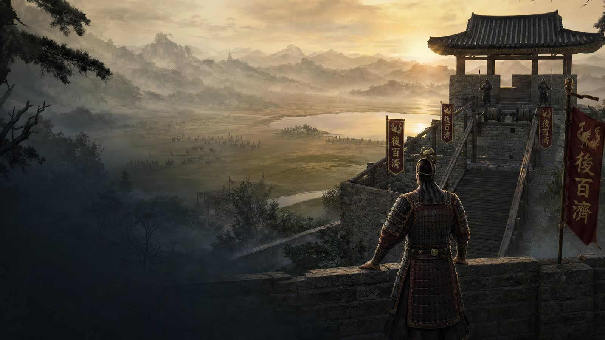
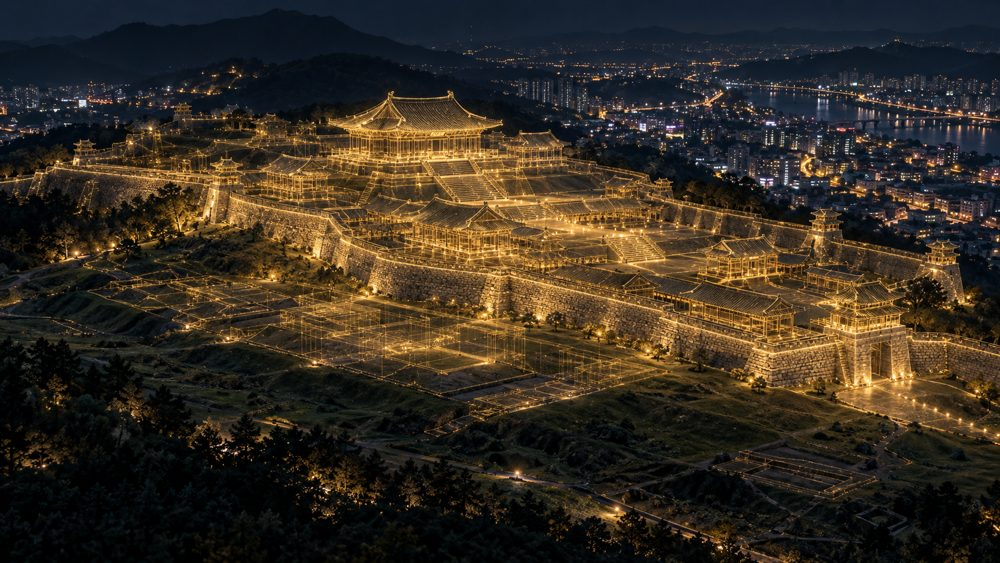
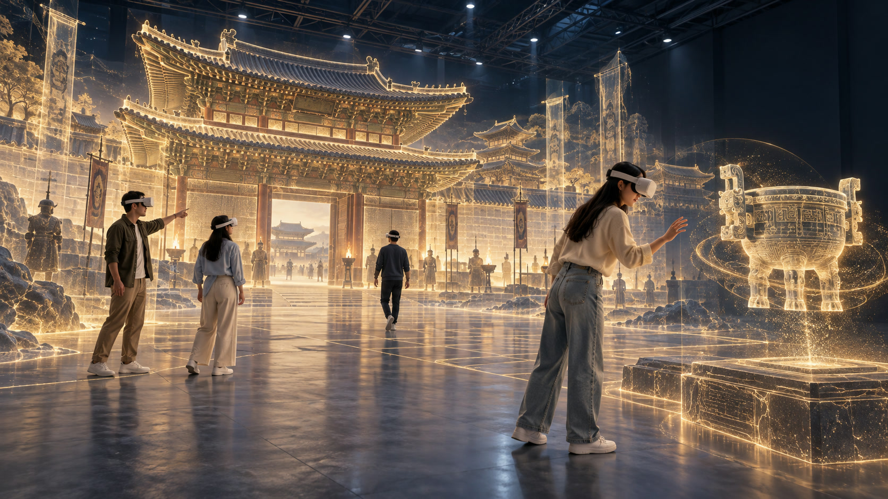
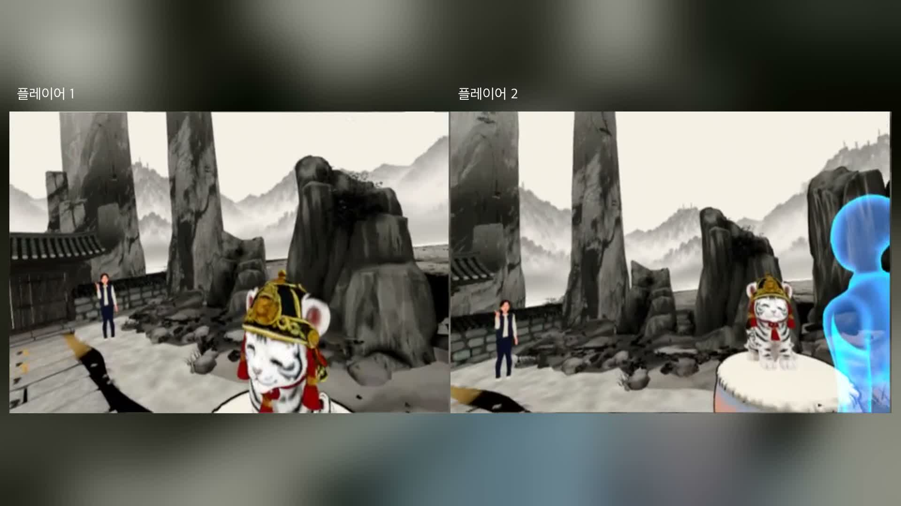
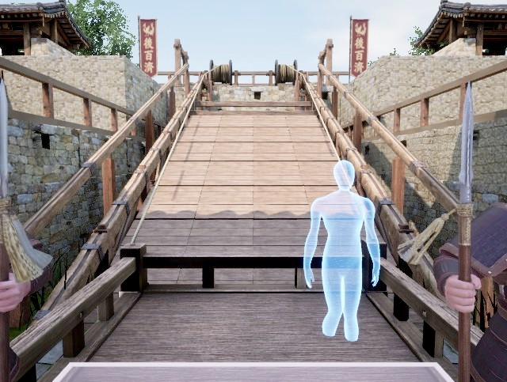
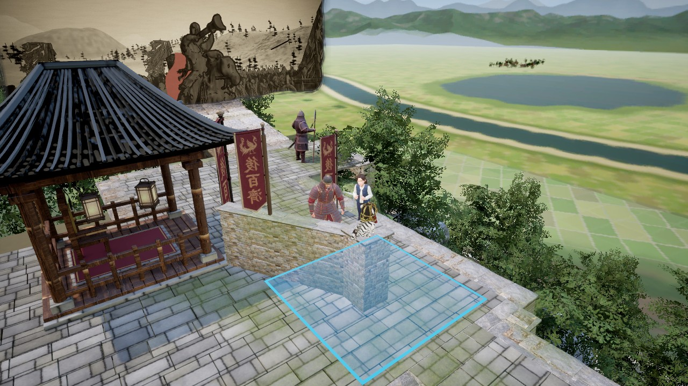
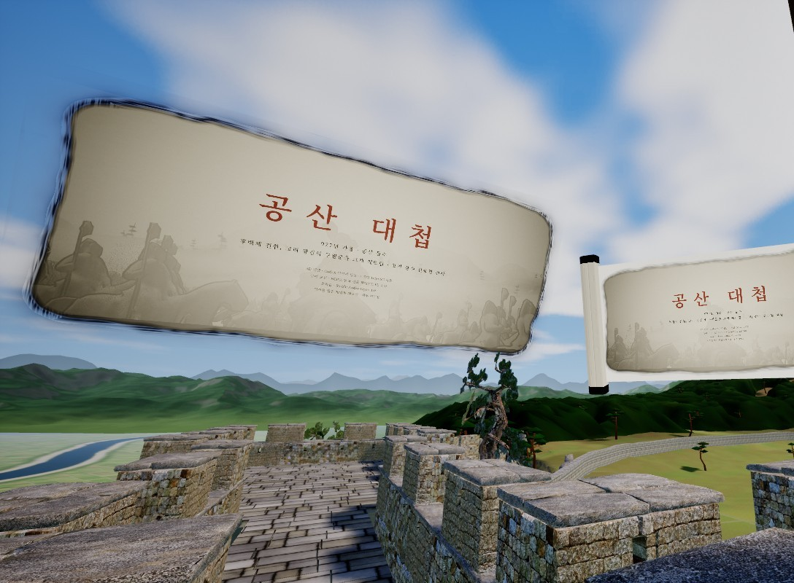
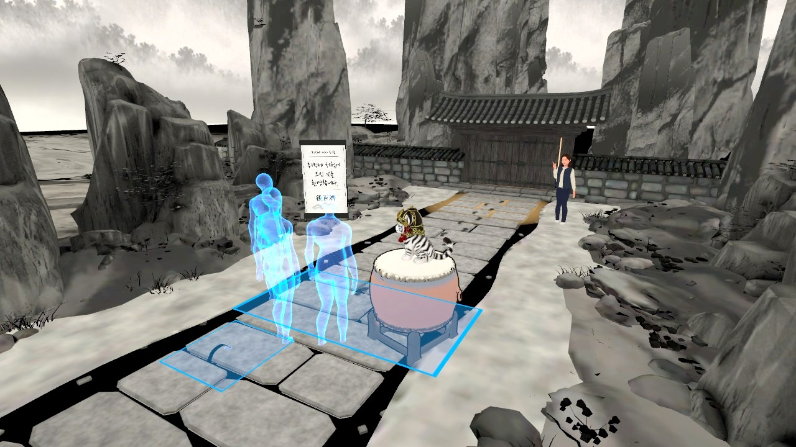
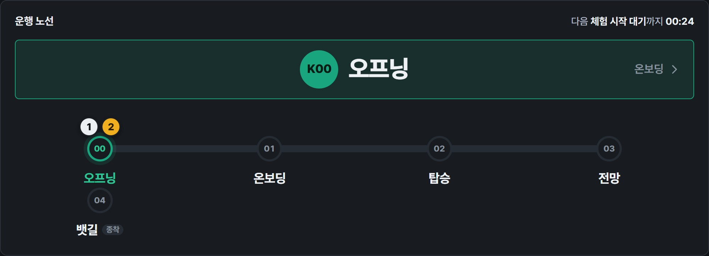
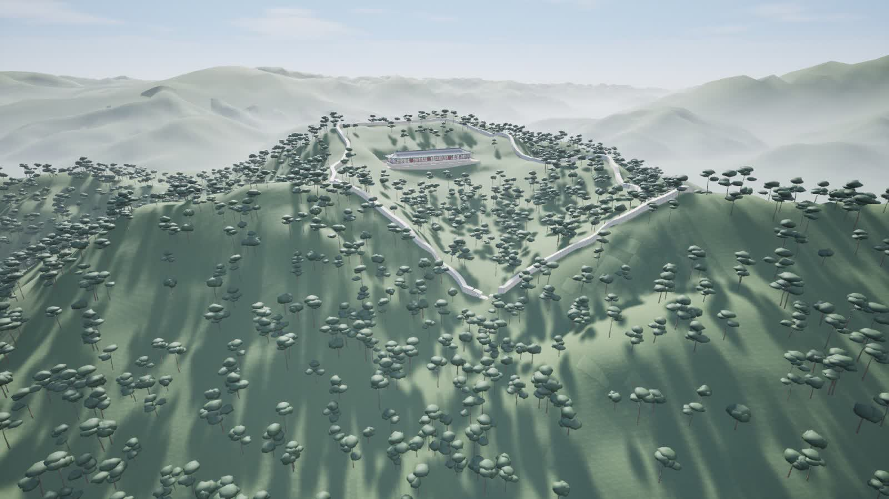

전주 역사 문화 실감 콘텐츠 · 워크스루 인터랙티브 VR
견훤,
천년의 귀환
천년의 귀환
단순 전시 관람을 넘어선 공간 보행 및 역사 서사 참여
Team XR Heritage Lab
콘텐츠 기획 및 구현 발표
01 · 기획 배경 · 실제 언론 보도 및 문제 정의
후백제의 왕도 전주, 언론이 지적한 '후백제 역사의 공백'
지역 언론과 연구기관의 실제 보도 · 각 카드 하단 링크에서 원문 확인 가능
AI 생성 이미지
서울신문
설정욱 기자 · 2026.08.17
「1100년전 전북 왕조 ‘후백제’, k-콘텐츠로 되살아날까」
“다만 짧은 존속 기간과 대표 유산의 부족 등으로 인해 그 가치가 충분히 조명받지 못했다.”
→ 역사적 가치에 비해 대중이 접할 대표 콘텐츠가 부족
AI 생성 이미지
전북일보 · 건축신문고
이정상 건축사 · 2026.03.26
「전주, 잠들어 있는 후백제의 숨결을 깨워야 할 때」
“전주의 도심 곳곳에 흩어진 후백제의 흔적들은 개발하면서 훼손되거나, 안내판 하나 없이 방치된 경우가 많다.”
→ 유적이 훼손·방치되어 현장에서 후백제를 체감하기 어려움

AI 생성 이미지
아이뉴스24 · 전북연구원
이슈브리핑 348호 · 2026.08.14
「전북연구원 "전북 중심 후백제역사문화 K-컬쳐로 육성해야"」
“지하에 매몰된 왕궁과 도성을 1:1 스케일의 ‘메타버스 후백제 왕경’과 AR(증강현실) 기술로 구현”
→ 터만 남은 왕도를 가상 공간에서 체험하는 디지털 복원 제안
핵심 결론: 언론과 연구기관이 지적한 공백에 대한 해답으로, 직접 걸으며 체험하는 ‘실감형 역사 워크스루 VR’ 기획
02 · 콘텐츠 기획 방향성
단순 관람형 LBE 탈피, '함께 걷는 역사 서사 체험' 추구
헤드셋 기반의 일방적 관람을 탈피, 참가자가 가상 공간을 직접 발로 딛고 함께 걸으며 서사에 개입하는 워크스루 구현

다인 자유 보행 기반 역사 가상 공간 (워크스루 환경)
공간 탐색 · 상호작용 · 동행자 공유
기존 관람형 LBE / VR 한계
스틱 조작 멀미 · 수동적 구경꾼 · 1인 단절
우리가 정의한 역사 워크스루
실제 보행 1:1 일치 · 능동적 서사 개입 · 다인 공존
01 · 이동의 자연스러움
조작 없는 자유 보행 워크스루
• 컨트롤러 스틱 및 텔레포트 이동 조작의 완전 배제
• 물리적 보행과 가상 시점 1:1 일치 기반 멀미(감각 불일치) 원천 차단
• 별도 조작 학습 없이 보행을 통한 직관적 가상 역사 공간 탐색
• 물리적 보행과 가상 시점 1:1 일치 기반 멀미(감각 불일치) 원천 차단
• 별도 조작 학습 없이 보행을 통한 직관적 가상 역사 공간 탐색
02 · 서사적 몰입
역사 서사 속 직접 상호작용 개입
• 수동적 구경꾼 탈피 및 역사 서사 속 ‘동반자’ 역할 부여
• 호랑이 접촉, 두루마리 선택, 견훤 대면 등 능동적 인터랙션 수행
• 체험자의 직접 상호작용을 통한 장면 전환 및 서사 주도 구조
• 호랑이 접촉, 두루마리 선택, 견훤 대면 등 능동적 인터랙션 수행
• 체험자의 직접 상호작용을 통한 장면 전환 및 서사 주도 구조
03 · 경험의 사회성
동행자 기반 다인 협동 체험
• 1인 고립형 VR의 한계 극복 및 사회적 상호작용 확보
• 물리 공간 내 동행자의 실시간 3D 아바타 시각화 기반 안전성 극대화
• 동반 발판 탑승, 낚시 협동 등을 통한 현장 감정 및 반응 실시간 공유
• 물리 공간 내 동행자의 실시간 3D 아바타 시각화 기반 안전성 극대화
• 동반 발판 탑승, 낚시 협동 등을 통한 현장 감정 및 반응 실시간 공유
지향점: 단순 기술 과시용 LBE가 아닌, ‘역사 서사’와 ‘체험자 상호작용’ 중심의 실감형 문화 콘텐츠
03 · 체험 구성 및 주요 장면
설화 속 조우부터 서라벌 전투까지의 4단계 여정
실제 프로젝트 구현 화면 · 참가자 보행 동선에 따른 역사적 사건의 4단계 서사 전개

01 · 탄생 설화
설화 속 호랑이
견훤 탄생 설화의 직관적 조우, 손 내밀기를 통한 호랑이와의 교감 및 서사 서막 진입

02 · 공간 이동
성벽 위로 상승
동행자와의 동반 발판 탑승, 성벽 상승 연출을 통한 가상 공간감 및 시야 확장 체감

03 · 역사적 대면
견훤과 서라벌
군주 견훤과의 대면, 음성 서사 청취를 통한 서라벌 진격 전투의 현장감 체감
04 · 다인 협동
함께 돕는 낚시
달밤 뱃길 내 낚시 협동 인터랙션 수행 및 환상적 고래 조우 연출
● 킨텍스 전시 현장 시연 영상
04 · 실제 플레이 영상
두 참가자의 1인칭 시점과 관찰자 시점 · 1분 14초
2인 동행 플레이 및 인터랙션 시연 영상 · 자동 반복 재생
05 · 핵심 기술 구현
다인 몰입 및 협동을 위한 핵심 시스템 구현
실제 프로젝트 구현 화면 · 참가자 능동 개입, 다인 협동, 안전한 회차 운영을 위한 핵심 시스템 구축

01
직관적 핸드 인터랙션
복잡한 컨트롤러 버튼 배제, 손 뻗기를 통한 두루마리 선택 및 직관적 서사 전개

02
실시간 멀티 아바타 동기화
가상 아바타 실시간 시각화 기반 물리 충돌 방지 및 다인 공존감 형성

03
체험 제어 및 운영 시스템
체험자 위치 관제, 운행 노선 및 장면 전환 흐름 제어를 위한 통합 관리 콘솔
시스템 특징: 1인 체험의 고립을 넘어선 다인 안전 보장 및 연속적 체험 환경 구축

06 · 제작 성과 및 결론
전주의 잊혀진 역사를,
살아 숨 쉬는 경험으로
살아 숨 쉬는 경험으로
성과 01
지역 문화유산의
현대적 서사 복원
현대적 서사 복원
• 전주 내 후백제 및 견훤 탄생 설화·역사의 현대적 실감 서사 재해석 완료
• 박제된 유적지 텍스트를 넘어선 대중 중심 역사 교육·관광 모델 제시
• 박제된 유적지 텍스트를 넘어선 대중 중심 역사 교육·관광 모델 제시
성과 02
조작 장벽 없는
자유 보행 워크스루
자유 보행 워크스루
• 컨트롤러 스틱 조작 배제 및 실제 보행 도입을 통한 VR 멀미·조작 부담 원천 해소
• 전 연령층 수용 가능한 직관적 보행 기반 사용자 경험 확립
• 전 연령층 수용 가능한 직관적 보행 기반 사용자 경험 확립
성과 03
킨텍스 현장 실증 및
다인 상호작용 검증
다인 상호작용 검증
• 대규모 전시(킨텍스) 현장 내 다인 동시 체험 및 운영 콘솔 안정성 실증 완료
• 낚시 협동 인터랙션 및 감정 공유를 통한 관람객 만족도 검증
• 낚시 협동 인터랙션 및 감정 공유를 통한 관람객 만족도 검증
자유 보행 워크스루 · 역사 서사 개입 · 다인 동행 상호작용 · 현장 실증
경청해 주셔서 감사합니다.